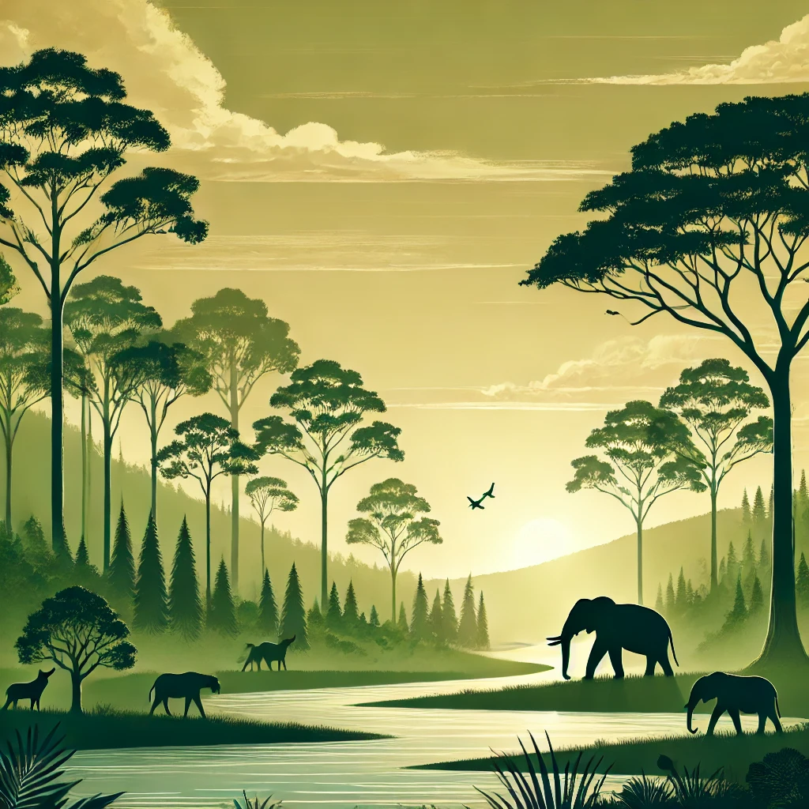
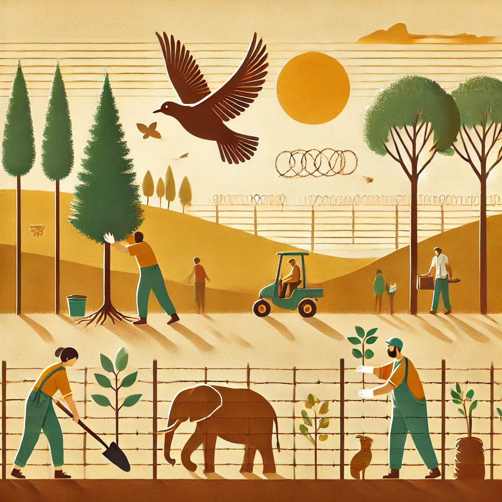

Endangered species are those at risk of extinction due to habitat loss, poaching, and environmental changes. Some examples include tigers, elephants, snow leopards, and sea turtles. Conservation efforts aim to protect these species through laws, breeding programs, and protected areas. Raising awareness and supporting conservation projects are vital to saving endangered species.
Everyone can contribute to animal conservation. Simple actions such as reducing plastic waste, recycling, and volunteering for conservation programs make a difference. Supporting wildlife organizations through donations or participating in campaigns also helps. Spreading awareness through social media and educational programs increases public knowledge about endangered species.
Various conservation projects are actively working to protect wildlife. These projects focus on preserving natural habitats, preventing poaching, and promoting sustainable practices. Some prominent projects include Project Tiger in India, WWF's global conservation efforts, and the Save the Elephants initiative in Africa.
| Project Name | Location | Details |
|---|---|---|
| Project Tiger | India | Learn More |
| WWF Conservation | Global | Learn More |
| Save the Elephants | Africa | Learn More |
| Wildlife Conservation Society | Global | Learn More |
| Born Free Foundation | Global | Learn More |